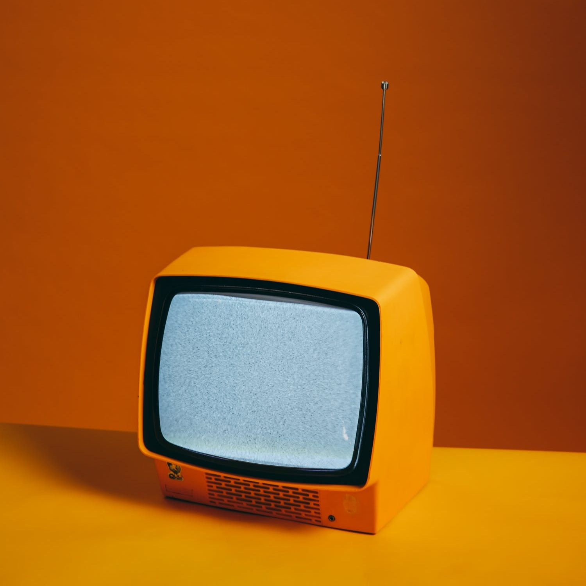

A cathode-ray tube (CRT) is a vacuum tube containing one or more electron guns, the beams of which are manipulated to display images on a phosphorescent screen. The images may represent electrical waveforms (oscilloscope), pictures (television set, computer monitor), radar targets, or other phenomena. A CRT on a television set is commonly called a picture tube. CRTs have also been used as memory devices, in which case the screen is not intended to be visible to an observer.
In television sets and computer monitors, the entire front area of the tube is scanned repeatedly and systematically in a fixed pattern called a raster. In color devices, an image is produced by controlling the intensity of each of three electron beams, one for each additive primary color (red, green, and blue) with a video signal as a reference. In modern CRT monitors and televisions the beams are bent by magnetic deflection, using a deflection yoke. Electrostatic deflection is commonly used in oscilloscopes.
Since the early 2010s, CRTs have been superseded by flat-panel display technologies such as LCD, plasma display, and OLED displays which are cheaper to manufacture and run, as well as significantly lighter and less bulky.
A CRT works by electrically heating a tungsten coil which in turn heats a cathode in the rear of the CRT, causing it to emit electrons which are modulated and focused by electrodes. The electrons are steered by deflection coils or plates, and an anode accelerates them towards the phosphor-coated screen, which generates light when hit by the electrons.
Before the invention of the integrated circuit, CRTs were thought of as the most complicated consumer electronics product.
